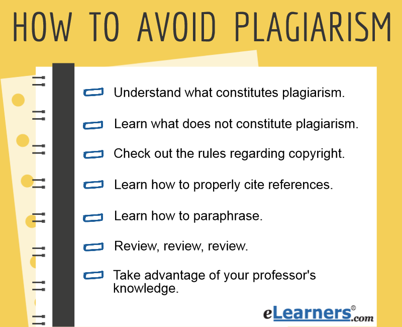

How can I prevent plagiarism?
Avoiding plagiarism is paramount as a writer
because it compromises your integrity. Aside
from losing the respect of your mentors and
peers, it could cost you valuable professional
referrals and future career advancement.
If you’re still in school, plagiarism may
result in lost financial aid or leadership
roles.
Additionally, it takes credit or profit away from
the original creator of the work which may mean
more trouble if the source takes legal action against you.
5 Ways To Avoid Plagiarsim- 